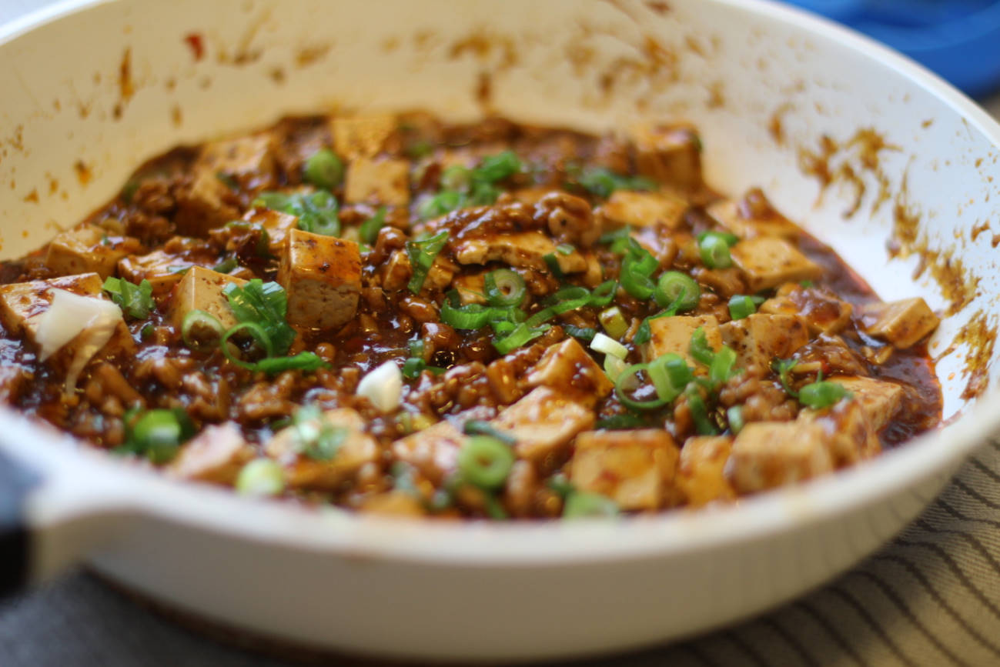

Mapo Tofu
A flavorful and spicy dish. A vegetarian (or vegan) variation can be made if you drop the minced meat. If you do so, you will probably want to add more tofu or some mushrooms, and possibly use some vegetable buillion or MSG to boost the umami.
metadata
Created on 2019-09-08 Last updated on 2020-05-16
Adapted from Mapo Tofu Recipe by Elaine Luo @ chinasichuanfood.com (2019-09-08)
Estimated time needed: At least 26.5 minutes. At most 45.5 minutes.
Ingredients
| 400 | g | minced meat | Beef or pork. | |
| 300 | g | tofu | Silken tofu is recommended, what's most important is that it is firm so that it doesn't disintegreate into a mush while working with it. | |
| 14 | dl | water | Can also use broth for even more savory. | |
| 2.5 | tbsp | water | ||
| 5 | slices | ginger | ||
| 4 | pieces | garlic greens | Can substitute in scallion greens. | |
| 2 | tbsp | oil | ||
| 2 | pinch | salt | ||
| 2 | pieces | scallion whites | ||
| 2 | cloves | garlic | ||
| 1.5 | tbsp | chili bean paste | Also known as Doubanjiang. Can be very salty, there is a lot of variation. This will impact whether you'll want to add more salt later or not. | |
| 1 | tbsp | black pepper | optional | |
| 1 | tbsp | cornstarch | Used as a neutral thickening agent, can be replaced by for instance potato flour. | |
| 1 | tbsp | light soy sauce | ||
| 0.5 | tbsp | fermented black beans | Can also be found under the name dou-chi, or sometimes fermented soya beans. | |
| 0.5 | tbsp | sichuan pepper | ||
| 0.5 | tbsp | sesame oil |
Scaling
Timeline
Directions
⌛ Active time 2 minutes
- 0.5 tbsp sichuan pepper
Roast sichuan pepper:
Roast the sichuan pepper in a clean, dry frying pan (don't use any oil or fats). Stir and toss them for about 30 seconds to a minute, until they become fragnant or start releasing smoke. Some of the corns may take up a slightly grey-ish color. Immediately remove them from the pan. Note that, while you can use pre-ground sichuan pepper powder, being freshly ground will give it a stronger flavor, and the frying step will take the intensity up a considerable notch above that again.
⌛ Active time 1 minutes
Crush sichuan pepper:
Crus the sichuan pepper using a mortar, or use the backside of a spoon/another similar blunt instrument.
⌛ Active time 10 minutes
- 5 slices ginger
- 4 pieces garlic greens | Can substitute in scallion greens.
- 2 pieces scallion whites
- 2 cloves garlic
- 0.5 tbsp fermented black beans | Can also be found under the name dou-chi, or sometimes fermented soya beans.
Chop vegetables:
Roughly chop the beans. Finely chop the rest of the vegetables. Set aside for later. Note that the greens will be applied close to the end, so you might want to store them separately.
⌛ Active time 1 minutes
- 400 g minced meat | Beef or pork.
- 0.5 tbsp sesame oil
- 1 pinch salt
Season meat:
Mix the meat with the sesame oil and a bit of salt, and set it aside.
⌛ Active time 1 minutes
- 1 tbsp cornstarch | Used as a neutral thickening agent, can be replaced by for instance potato flour.
- 2.5 tbsp water
Make starchy water:
Combine the water and starch in a small bowl to make som starchy water.
⌛ Active time 1 minutes
- 300 g tofu | Silken tofu is recommended, what's most important is that it is firm so that it doesn't disintegreate into a mush while working with it.
Cut tofu in cubes:
Cut the tofu into square cubes, the sides can be about 2cm.
⌛ Active time 2 minutes | Passive time 5 minutes
- 10 dl water
- 1 pinch salt
Boil tofu:
Boil up water with a bit of salt. Once the water is boiling add the tofu. Cook it for about a minute. Then drain, and set aside. This should help make the tofu even firmer, so that you're less likely to crush them later on.
⌛ Active time 5 minutes
- 2 tbsp oil
Fry the meat:
Heat up som oil in a (prefferably wok?) pan. Fry the minced meat until it is crispy. Once done, take the meat out, and leave the oil in the pan for the next step.
⌛ Active time 1 minutes
- 1.5 tbsp chili bean paste | Also known as Doubanjiang. Can be very salty, there is a lot of variation. This will impact whether you'll want to add more salt later or not.
Fry the bean paste:
Over low heat, fry the chili bean paste for about 1 minute.
⌛ Active time 0.5 minutes
Add the vegetables, except greens:
Cook for about 30 seconds, until it becomes fragnant.
⌛ Active time 3 minutes
- 1 tbsp black pepper | optional
- 4 dl water | Can also use broth for even more savory.
Add pepper and water:
Stir in the pepper if you want to use it, add water, and turn to hight heat to bring it all to a boil.
⌛ Active time 1 minutes | Passive time 8 minutes
- 1 tbsp light soy sauce
Add tofu, meat, and soy sauce:
Carefully slide in the tofu, and add the meat you previously prepared and the soy sauce. Reduce the heat, and let it simmer for about 6 to 8 minutes.
⌛ Active time 1 minutes | Passive time 2 minutes
Add greens and starchy water:
Add the greens (if you also want to use the greens for garnish save some of them though), and half the starchy water. As it has maybe been sitting for a while now, it might be a good idea to give the starch mixture a stir before adding it. After abot 30 seconds, add the rest of the starch. At this point, if you want to adjust the direction of the dish, you could give it a taste, and add some sugar if you feel it's getting to spicy, or salt if you feel it needs that. Cook unitl the sauce and most of the other ingredients stick to the tofu.
⌛ Active time 1 minutes
Garnish:
Garnish with the rest of the greens and sichuan pepper powder. Serve immediately.